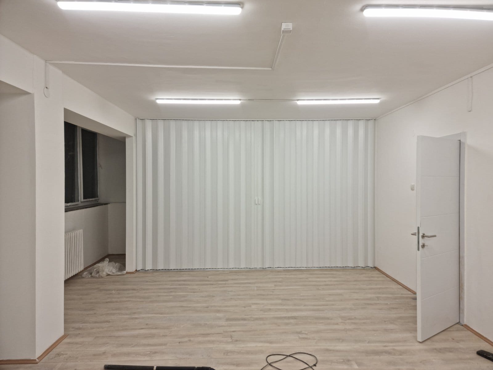
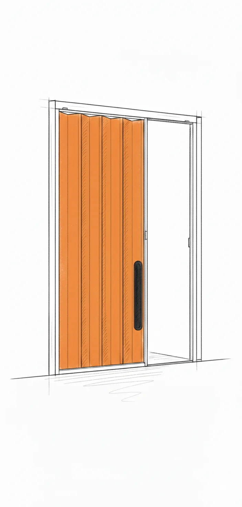
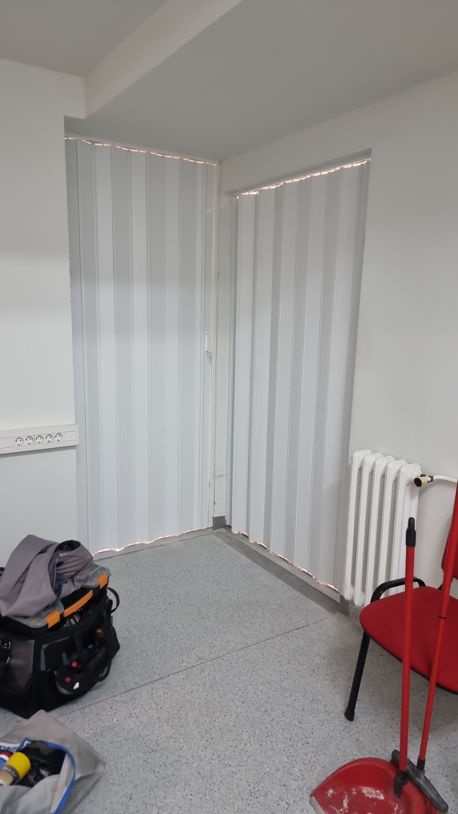
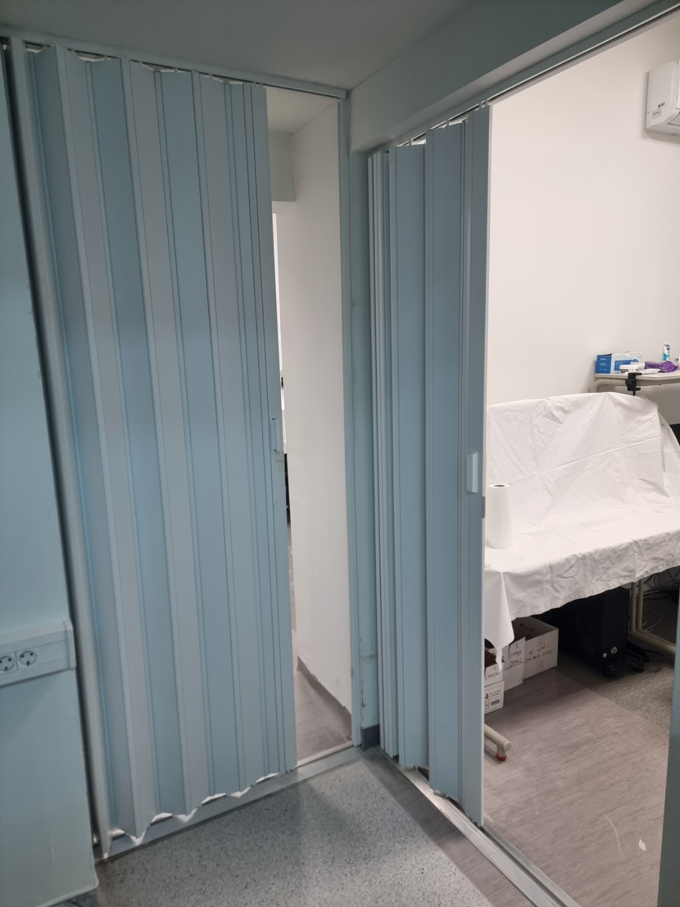
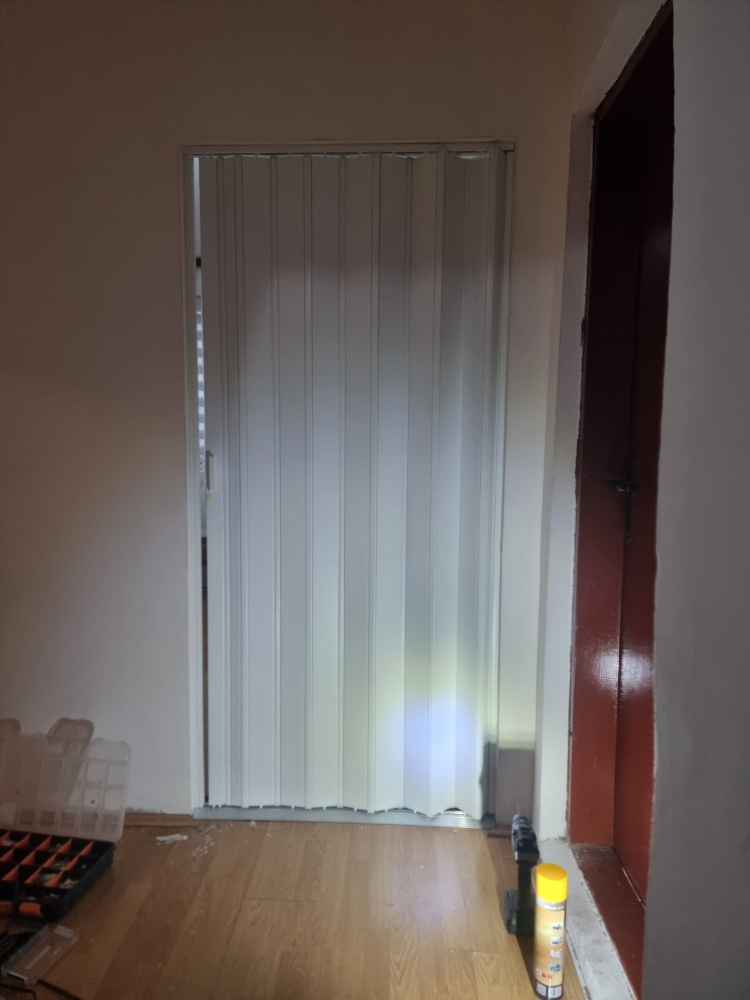
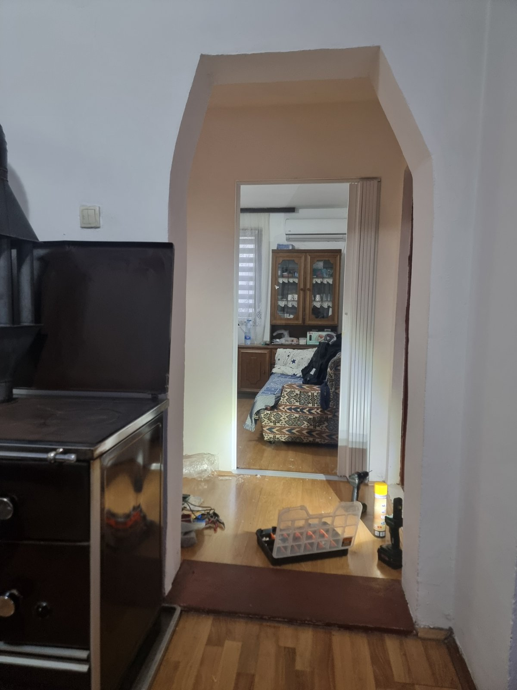

60–70€/m² sa ugradnjom · izrada 7–10 dana · ugradnja za 2–4 sata · garancija 2 godine · besplatno merenje u celom Beogradu
Ažurirano:
Harmonika vrata po meri u Beogradu koštaju 60–70€ po m², a cena uključuje materijal, izradu, ugradnju i 2 godine garancije. Vrata izrađujemo za 7–10 dana od besplatnog merenja, a ugradnja kod vas traje 2–4 sata. Radimo na teritoriji celog Beograda.
Znate onaj osećaj kada vam klasična vrata stalno udaraju u ormar ili vam „pojedu" pola hodnika? E, tu mi stupamo na scenu! Već 5 godina ugrađujemo harmonika vrata po Beogradu – u stanove, kuće, kupatila, garderobe i poslovne prostore. Harmonika vrata se sklapaju uz ivicu otvora, pa ne zauzimaju prostor ni ispred ni iza vrata.

U KOMOTRAKS-u ne prodajemo samo vrata – vraćamo vam slobodan kvadrat doma, uz osmeh i dizajn koji se uklapa u vaš enterijer. Pored harmonika vrata izrađujemo i komarnike po meri, kao i zebra i trakaste zavese.

Sklopiva vrata koja štede prostor
Paneli se sklapaju jedan uz drugi poput harmonike. Idealno za garderobe, kupatila, izlaz na terasu, pregrade prostorija i kancelarije.
Harmonika vrata čine PVC paneli povezani šarkama, koji se kreću po šini montiranoj na gornjem delu otvora. Kada ih otvorite, paneli se sklope jedan uz drugi i ostanu uz ivicu otvora. Svaki panel ima točkiće, pa se vrata otvaraju lako i tiho. Za široke otvore i pregrade izrađujemo dvokrilna harmonika vrata koja se sklapaju na obe strane.
Harmonika vrata nisu zamena za ulazna ni sigurnosna vrata i ne izoluju zvuk kao puna sobna vrata. Ako vam je za neku prostoriju najvažnija zvučna izolacija, posavetovaćemo vas na besplatnom merenju da li su harmonika vrata pravi izbor.
Cena harmonika vrata po meri je 60–70€ po m² i uključuje materijal, izradu po meri, ugradnju i 2 godine garancije. Merenje je besplatno i ne obavezuje vas na narudžbinu. U tabeli su orijentacione cene za česte dimenzije otvora:
| Otvor (širina × visina) | Površina | Cena |
|---|---|---|
| 70 × 200 cm (kupatilo, špajz) | 1,40 m² | 84–98 € |
| 80 × 205 cm (standardna sobna vrata) | 1,64 m² | 98–115 € |
| 120 × 210 cm (garderoba, širi prolaz) | 2,52 m² | 151–176 € |
| 200 × 240 cm (pregrada prostorije) | 4,80 m² | 288–336 € |
Tačnu cenu dobijate posle besplatnog merenja – zavisi od tačnih dimenzija otvora i izabranog modela i boje.
Fotografije i snimak sa naših ugradnji, napravljeni odmah posle montaže:




Još primera ugrađenih harmonika vrata pogledajte u galeriji radova
Pitate se šta nas izdvaja iz mase? Iskreno, to je strast prema rešavanju vaših problema sa prostorom! Za ovih 5 godina krstarenja Beogradom ugradili smo stotine harmonika vrata – od malih garderoba na Vračaru do širokih otvora prema terasi na Novom Beogradu. I svaki put smo pronašli rešenje koje odgovara baš tom prostoru.
Svaki prostor je priča za sebe, baš kao i svaki klijent. Zato ne verujemo u šablonska rešenja. Kada uđemo u vaš dom, gledamo ga kao da je naš: pazimo na estetiku i funkcionalnost, ali i na to da se vrata po boji uklope uz parket ili kuhinju.
Znate one majstore koji vam okrenu kuću naglavačke? E, mi nismo ti! Naša ugradnja je, što bi se reklo, hirurški precizna i čista. Verujemo da posao nije završen kada vrata stanu na mesto, već kada vi ostanete sa osmehom na licu, a mi sa čistim obrazom.
Od prvog telefonskog poziva do trenutka kada vam pružimo ruku posle montaže, kod nas nema mutnih radnji ni sitnih slova. Cena koju dogovorimo je ona koju plaćate, a rok od 7–10 dana za nas je svetinja.
Ugrađujemo harmonika vrata u svim delovima Beograda. Svaka opština ima svoje specifičnosti – od tipa gradnje do veličine otvora – pa i rešenje prilagođavamo prostoru. Evo šta najčešće radimo u pojedinim delovima grada:
Novogradnja na Novom Beogradu često ima otvoren koncept, pa su ovde najtraženija harmonika vrata za terase, garderobe i pregrade prostorija, kao i za poslovne prostore (kao na fotografiji iznad). Dolazimo u sve blokove – Blok 45, Blok 70, Bežanijsku kosu, Fontanu, A blok i ostale delove opštine. Za široke otvore preporučujemo dvokrilna vrata koja se sklapaju na obe strane.
Stanovi u centru grada često imaju manje prostorije, gde klasična vrata oduzimaju dragoceni prostor. Na Vračaru, od Cvetnog trga do Hrama Svetog Save, najčešće ugrađujemo vrata za male garderobe, kupatila i hodničke otvore, a radimo i poslovne prostore i ordinacije. Vrata po meri se lako uklapaju i u starogradnju i u moderne stanove.
Za porodične stanove i kuće na Zvezdari harmonika vrata su praktičan izbor jer ne oduzimaju prostor. Pokrivamo Crveni krst, Bulbulder, Mali Mokri Lug, Mirijevo, Konjarnik i ostale delove opštine. Najčešće razdvajamo dnevni boravak od kuhinje i zatvaramo garderobne prostore.
Na Voždovcu radimo i starije kuće na Banjici i Jajincima i novije stanove na Autokomandi i Šumicama – od kupatila i garderoba do izlaza na terasu u prizemnim kućama. Svaka vrata izrađujemo prema dimenzijama vašeg otvora.
Stanovi na Paliluli i Karaburmi često imaju nestandardne otvore, pa je izrada po meri ovde posebno važna. Ugrađujemo vrata na Bogosloviji, Karaburmi, u Borči, Ovči, Krnjači i ostalim delovima Palilule – i u starijim zgradama sa užim otvorima.
U Zemunu radimo i moderne stambene komplekse i starije kuće. U Rakovici, sa dosta porodičnih kuća, najčešće zatvaramo špajz i garderobe, dok su na Čukarici – posebno u novogradnji na Banovom brdu i Žarkovu – tražena vrata za izlaz na terasu.
Za enterijere u Starom gradu i na Savskom vencu klijenti najčešće biraju dezen imitacije drveta ili elegantan antracit, koji se uklapa u starogradnju sa visokim plafonima. Merenje i savet su besplatni i ovde, kao i u svakom delu grada.
Cena harmonika vrata po meri je 60–70€ po m² i uključuje materijal, izradu, ugradnju i garanciju od 2 godine. Na primer, za standardni otvor 80 × 205 cm (1,64 m²) cena je oko 98–115€. Tačnu cenu dajemo posle besplatnog merenja.
Da. Dolazimo na vašu adresu bilo gde u Beogradu, izmerimo otvor i posavetujemo vas oko modela i boje. Merenje je potpuno besplatno i ne obavezuje vas na narudžbinu.
Izrada po meri traje 7–10 dana od merenja, a sama ugradnja kod vas obično traje 2–4 sata.
Da, harmonika vrata za izlaz na terasu ili balkon su jedno od naših najtraženijih rešenja. Sklapaju se uz ivicu otvora pa ne zauzimaju prostor, a PVC materijal je otporan na vlagu.
Nudimo klasičnu belu, imitacije drveta (hrast, orah, mahagoni) i savremene tonove (siva, antracit, bež), u mat ili sjajnoj završnoj obradi. Primere pogledajte u galeriji.
Sva harmonika vrata imaju 2 godine garancije na materijal i rad. Ako dođe do problema sa šarkama, točkićima ili klizanjem, besplatno popravljamo ili menjamo deo. Garancija ne pokriva namerna oštećenja.
Naša harmonika vrata su od kvalitetnog PVC-a koji ne upija vlagu, sa čeličnim šarkama. Uz pravilno održavanje traju 10 i više godina.
Dovoljno je da ih povremeno obrišete vlažnom krpom i blagim deterdžentom i da šinu očistite od prašine kako bi vrata i dalje glatko klizila.
Radimo na celoj teritoriji Beograda: Novi Beograd, Vračar, Zvezdara, Voždovac, Palilula i Karaburma, Zemun, Rakovica, Čukarica, Stari Grad, Savski venac, Banovo brdo, Žarkovo i okolina. Merenje je besplatno za sve lokacije.
Pozovite nas za besplatno merenje i stručnu procenu. Harmonika vrata za terase, kupatila i garderobe - profesionalna izrada i brza ugradnja u celom Beogradu.